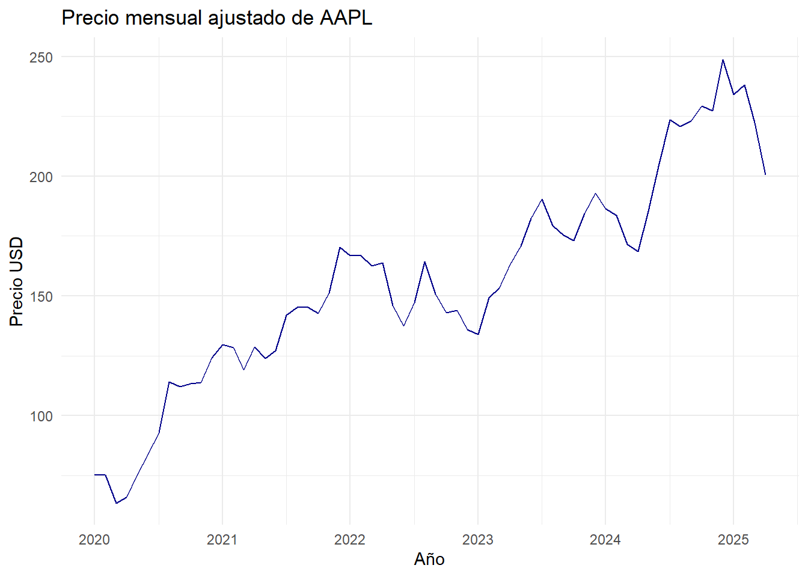
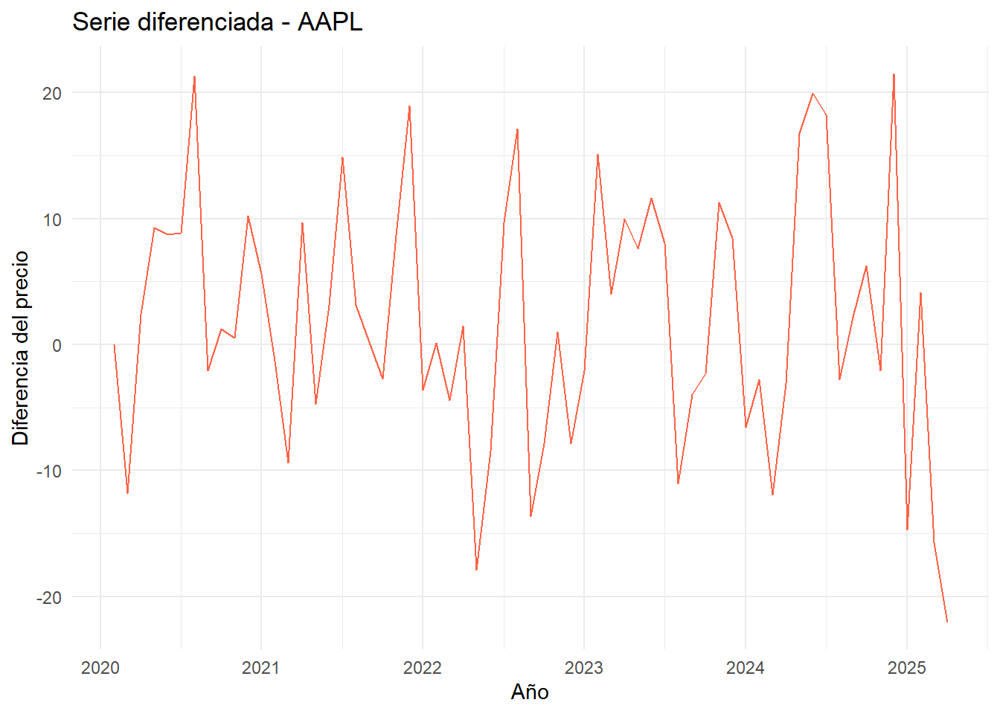
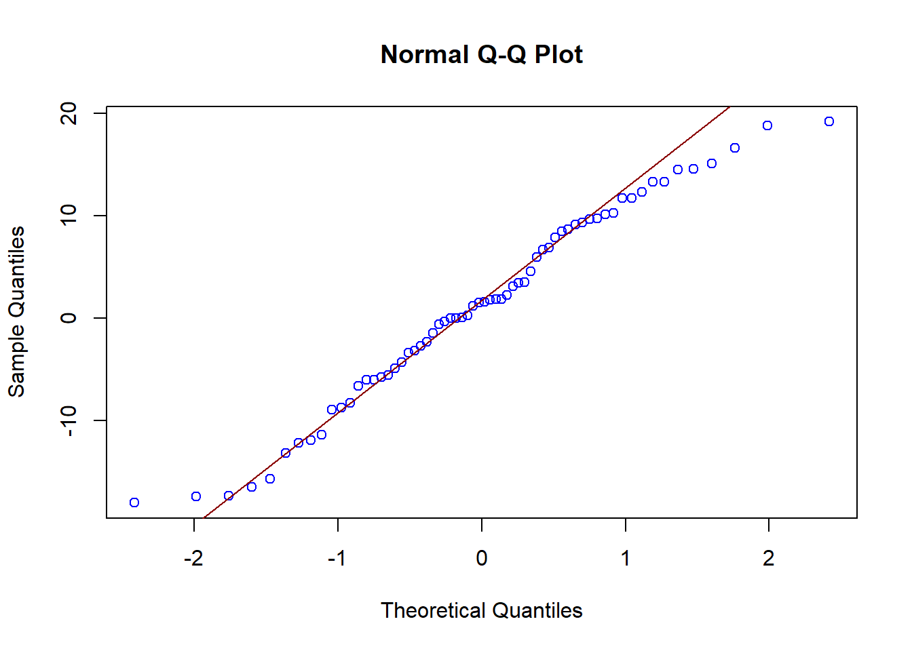
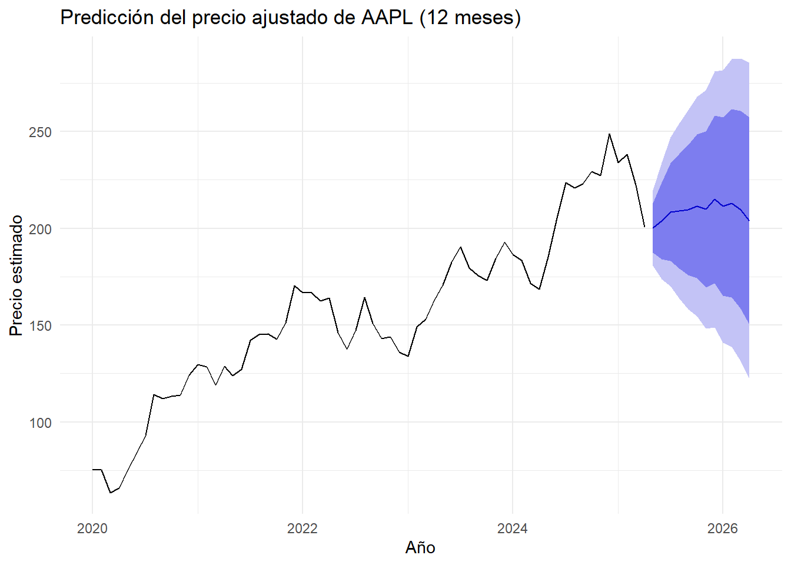

Capitulo5 Modelado Avanzado y Validación de Supuestos Holt-Winters.
5.1 Introducción.
Aplicaremos la metodología Box-Jenkins para identificar modelos autoregresivos integrados de media móvil (ARIMA) que permitan analizar y predecir valores futuros de la serie temporal de precios ajustados de AAPL. Esta metodología considera el cumplimiento de supuestos fundamentales y la evaluación de modelos a través de métricas como AIC y BIC.
5.2 Objetivos.
- Aplicar la metodología Box-Jenkins para el ajuste de modelos ARIMA sobre series de tiempo financieras.
- Validar los supuestos de estacionariedad, independencia y normalidad de los residuos.
- Comparar modelos mediante criterios de información (AIC y BIC).
- Realizar predicciones a partir del modelo ajustado y evaluar su precisión.
5.3 Cargar datos y preparar la serie.
library(tidyquant)
library(forecast)
library(tseries)
library(ggplot2)
# Descargar y preparar datos
apple_data <- tq_get("AAPL", from = "2020-01-01", to = "2025-04-30") %>%
na.omit() %>%
mutate(month = format(date, "%Y-%m")) %>%
group_by(month) %>%
summarise(adjusted_mean = mean(adjusted)) %>%
ungroup()
# Convertir a serie de tiempo
apple_ts <- ts(apple_data$adjusted_mean, start = c(2020,1), frequency = 12)
# Visualización
autoplot(apple_ts, colour = "darkblue") +
labs(title = "Precio mensual ajustado de AAPL", x = "Año", y = "Precio USD") +
theme_minimal()
5.4 Prueba de estacionariedad (ADF).
##
## Augmented Dickey-Fuller Test
##
## data: apple_ts
## Dickey-Fuller = -2.9868, Lag order = 3, p-value = 0.1751
## alternative hypothesis: stationary5.5 Diferenciación si es necesario.
apple_ts_diff <- diff(apple_ts)
autoplot(apple_ts_diff, colour = "tomato") +
labs(title = "Serie diferenciada - AAPL", x = "Año", y = "Diferencia del precio") +
theme_minimal()
##
## Augmented Dickey-Fuller Test
##
## data: apple_ts_diff
## Dickey-Fuller = -3.9959, Lag order = 3, p-value = 0.01563
## alternative hypothesis: stationary5.7 Ajuste del modelo ARIMA.
## Series: apple_ts
## ARIMA(1,1,0)(0,0,1)[12]
##
## Coefficients:
## ar1 sma1
## 0.1968 0.2845
## s.e. 0.1272 0.1426
##
## sigma^2 = 97.15: log likelihood = -233.05
## AIC=472.11 AICc=472.52 BIC=478.54
##
## Training set error measures:
## ME RMSE MAE MPE MAPE MASE ACF1
## Training set 1.22754 9.622663 7.866658 0.8277077 5.209372 0.2335286 -0.013276115.8 Validación de supuestos.
##
## One Sample t-test
##
## data: residuos
## t = 1.0209, df = 63, p-value = 0.3112
## alternative hypothesis: true mean is not equal to 0
## 95 percent confidence interval:
## -1.175338 3.630417
## sample estimates:
## mean of x
## 1.22754##
## Box-Ljung test
##
## data: residuos
## X-squared = 12.162, df = 12, p-value = 0.4327
##
## Shapiro-Wilk normality test
##
## data: residuos
## W = 0.97643, p-value = 0.25845.9 Predicción.
forecast_arima <- forecast(modelo_arima, h = 12)
autoplot(forecast_arima, colour = "forestgreen") +
labs(title = "Predicción del precio ajustado de AAPL (12 meses)", x = "Año", y = "Precio estimado") +
theme_minimal()
5.10 Conclusiones.
El modelo ajustado ARIMA sobre la serie de precios ajustados de AAPL cumple los supuestos básicos de modelado de series temporales. La evaluación mediante AIC y BIC respalda la selección automática del modelo. Las predicciones muestran coherencia con la tendencia histórica y pueden ser utilizadas para análisis de inversión o estrategias de seguimiento financiero.
5.11 Bibliografía.
Yahoo Finance. (2025). Apple Inc. (AAPL) Stock Price & Historical Data. Recuperado de https://finance.yahoo.com/quote/AAPL
Dancho, M. & Vaughan, D. (2021). tidyquant: Tidy Quantitative Financial Analysis. R package version 1.0.4. Recuperado de https://business-science.github.io/tidyquant/
Hyndman, R. J. & Athanasopoulos, G. (2021). Forecasting: Principles and Practice (3ra ed.). OTexts. Disponible en https://otexts.com/fpp3/
Cowpertwait, P. & Metcalfe, A. (2009). Introductory Time Series with R. Springer. DOI: 10.1007/978-0-387-88698-5
Shumway, R. H., & Stoffer, D. S. (2017). Time Series Analysis and Its Applications: With R Examples (4ta ed.). Springer.
R Core Team. (2023). R: A Language and Environment for Statistical Computing. R Foundation for Statistical Computing. Disponible en https://www.R-project.org/
Analytics Vidhya. (2021). Holt-Winters Method for Time Series Analysis. Recuperado de: https://www.analyticsvidhya.com/blog/2021/08/holt-winters-method-for-time-series-analysis/
R Documentation. HoltWinters() y forecast packages. Recuperado de https://www.rdocumentation.org/packages/stats/versions/3.6.2/topics/HoltWinters
Wickham, H., & Grolemund, G. (2016). R for Data Science. O’Reilly Media.